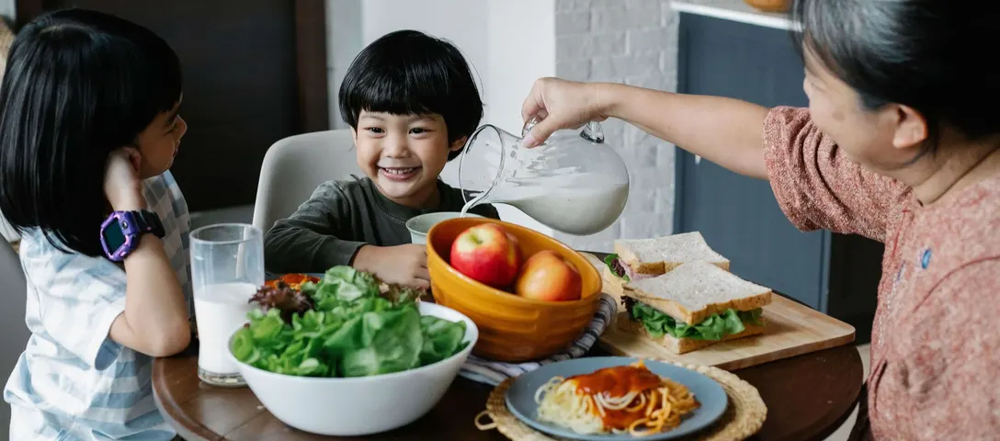
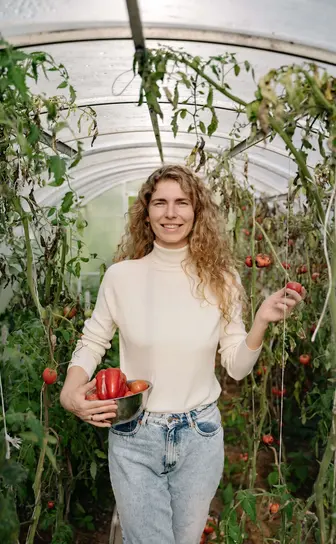
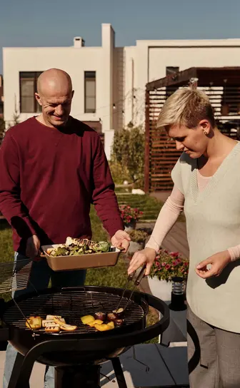
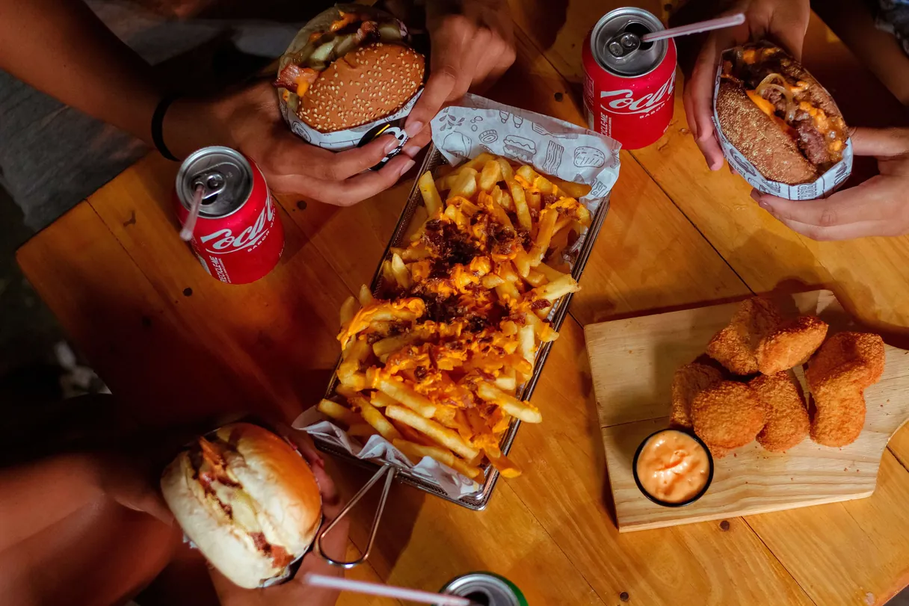
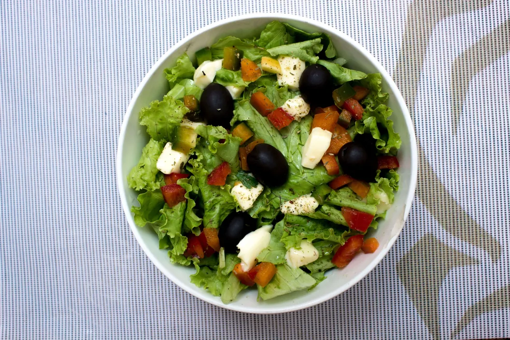
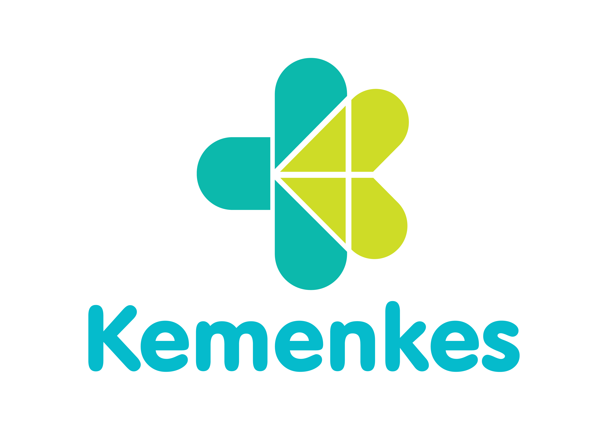

Sulit Mengetahui Kandungan Gizi
Banyak orang makan tanpa mengetahui jumlah kalori, gula, lemak, protein, atau serat dari makanan yang dikonsumsi.
1.000+ rekomendasi makanan sehat tersedia
Kenali pilihan makanan yang lebih baik dan temukan inspirasi resep sehat yang sesuai dengan kebutuhanmu setiap hari.



PERMASALAHAN

Banyak orang makan tanpa mengetahui jumlah kalori, gula, lemak, protein, atau serat dari makanan yang dikonsumsi.
Makanan dan minuman tinggi gula atau lemak sering dikonsumsi tanpa disadari, sehingga dapat memengaruhi pola makan sehat.
Kurangnya asupan sayur, buah, serat, protein, dan nutrisi penting membuat pola makan harian kurang seimbang serta tubuh mudah kekurangan gizi.
CARA NUTLENS MEMBANTU

Pengguna mulai dengan mengecek makanan melalui foto atau pilihan makanan.
CARA KERJA NUTRILENS
NutLens membantu kamu mengenali makanan, membaca kandungan nutrisinya, dan menemukan rekomendasi yang lebih sehat untuk kebutuhan harianmu.
Unggah foto makanan atau pilih contoh makanan yang ingin dianalisis oleh NutLens.
NutLens menampilkan estimasi nutrisi seperti kalori, protein, lemak, karbohidrat, dan skor kesehatan makanan.
Pengguna menerima saran konsumsi yang mudah dipahami agar bisa memilih makanan dengan lebih bijak.
KATA PENGGUNA
Pengalaman pengguna dalam memahami kandungan makanan, dan membangun kebiasaan makan yang lebih baik bersama NutLens.
Sekarang saya tidak hanya memilih makanan karena terlihat enak. NutLens membantu saya memahami kandungan gizinya dan memberikan rekomendasi yang mudah diikuti.


TENTANG KAMI
NutLens hadir untuk membantu kamu mengenali makanan, memahami kandungan gizinya, dan membuat pilihan yang lebih bijak melalui informasi yang ringkas dan mudah dipahami.
NutLens adalah partner kesehatan terpercaya yang menghadirkan informasi nutrisi dan kesehatan yang akurat, mudah dipahami, dan relevan untuk mendukung gaya hidup sehat masyarakat Indonesia.

Unggah foto makananmu dan temukan estimasi kandungan gizi, skor kesehatan, serta rekomendasi yang mudah dipahami.
Pelajari SelengkapnyaPengguna cukup mengunggah foto makanan. NutLens kemudian mengidentifikasi makanan dan menampilkan estimasi kandungan gizi beserta rekomendasinya.
Hasil NutLens merupakan estimasi berdasarkan foto dan informasi makanan yang tersedia. Hasil dapat berbeda tergantung kualitas foto, porsi, dan komposisi makanan.
NutLens dirancang untuk mengenali berbagai makanan sehari-hari, termasuk makanan rumahan, makanan kemasan, camilan, serta beragam hidangan Indonesia.
NutLens menyediakan fitur dasar yang dapat digunakan untuk mencoba pengenalan makanan dan memahami informasi nutrisi dengan lebih mudah.
Tidak. NutLens merupakan sarana edukasi dan pendukung keputusan, bukan pengganti diagnosis atau rekomendasi dari dokter dan ahli gizi.
Fitur unggah dan penyimpanan foto belum diimplementasikan pada versi NutLens saat ini. Kebijakan penyimpanan akan dijelaskan setelah mekanisme tersebut tersedia.